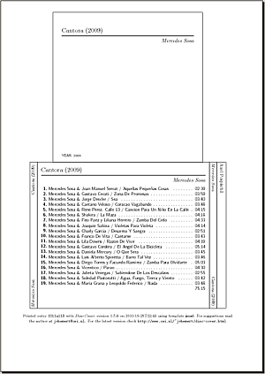
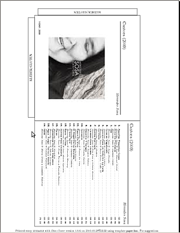
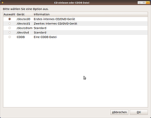
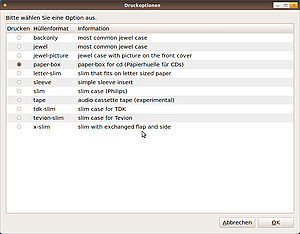
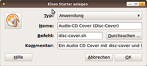

disc-cover
Dieser Artikel wurde für die folgenden Ubuntu-Versionen getestet:
Ubuntu 14.04 Trusty Tahr
Zum Verständnis dieses Artikels sind folgende Seiten hilfreich:
Disc-Cover  ist eine Befehlszeilenanwendung von Jano van Henmert , welche unter Verwendung von LaTeX verschiedene Formen von CD-Hüllen zum Ausdrucken herstellen kann. Disc-Cover erzeugt Vor- und Rückseitencover für Audio-CDs auf einer einzelnen DINA4-Druckseite. Die Ausgabe ist schlicht und einfach, aber durch die Verwendung von LaTeX sehr ansprechend. Disc-Cover durchsucht eine CDDB-Datenbank (Internetverbindung vorausgesetzt) online nach der passenden Identitätsnummer für die CD. Auch lokale CDDB-Datenbanken werden unterstützt. Alternativ kann eine gültige CDDB-Datei als Eingabe verwendet werden.
ist eine Befehlszeilenanwendung von Jano van Henmert , welche unter Verwendung von LaTeX verschiedene Formen von CD-Hüllen zum Ausdrucken herstellen kann. Disc-Cover erzeugt Vor- und Rückseitencover für Audio-CDs auf einer einzelnen DINA4-Druckseite. Die Ausgabe ist schlicht und einfach, aber durch die Verwendung von LaTeX sehr ansprechend. Disc-Cover durchsucht eine CDDB-Datenbank (Internetverbindung vorausgesetzt) online nach der passenden Identitätsnummer für die CD. Auch lokale CDDB-Datenbanken werden unterstützt. Alternativ kann eine gültige CDDB-Datei als Eingabe verwendet werden.
Die Ausgabe erfolgt als LaTeX, DVI, Postscript- oder PDF-Dokument  . Unterstützt wird auch ein Ausgabeformat für das Programm cdlabelgen .
. Unterstützt wird auch ein Ausgabeformat für das Programm cdlabelgen .
Installation¶
Hinweis:
Disc-Cover benötigt LaTeX. Es werden deshalb zahlreiche zusätzliche Pakete installiert. Der Umfang der Installation beträgt mind. 150 MB.
Zur Installation von disc-cover benötigt man das Paket [1]
disc-cover (universe)
 mit apturl
mit apturl
Paketliste zum Kopieren:
sudo apt-get install disc-cover
sudo aptitude install disc-cover
|  |
| Standardcover |
Benutzung¶
Der einfachste Weg, Disc-Cover zu verwenden, ist bei bestehender Internetverbindung eine Audio-CD in das CD-ROM Laufwerk zu legen und folgenden Befehl in einem Terminal [3] einzugeben:
disc-cover
Disc-Cover durchsucht automatisch die CDDB-Datenbank und erzeugt ein Postscript-Dokument, das den Namen der CD trägt. So sieht die Ausgabe am Beispiel einer CD von Mercedes Sosa aus:
Warning: all the tracks of this cd contain a slash ' / ' in their track titles, which could mean it is a various artist cd that contains the form 'artist / title' for each track. Use the flag '-va' to make a nicer format. Output for cddb entry "1011a113" goes to "Mercedes_Sosa_-_Cantora_(2009).ps"
Disc-Cover hat damit die Datei Mercedes_Sosa_-_Cantora_(2009).ps (siehe Abbildung rechts) erzeugt. Die zugehörige CDDB-ID lautet "1011a113". Über diese ID kann man auch leicht die zugehörige CDDB-Datei auf freedb.org finden. Disc-Cover warnt, dass die Darstellung der Liedtitel schöner sein könnte und empfiehlt die Verwendung des Parameters -av.
Nun öffnet man die Datei z.B. mit dem Programm Evince - dem Standard-Dokumentenbetrachter unter GNOME. Arbeitet man mit Kubuntu unter KDE, so kann man dafür Okular verwenden.
Der Befehl, der zur Ausgabe des zweiten Beispielbilds auf der rechten Seite führt, sieht so aus:
convert "Mercedes Sosa - Cantora (2009)".jpg cover.ps disc-cover -av -pic cover.ps
Was kann Disc-Cover¶
Um das volle Potential von Disc-Cover auszuschöpfen, sollte man die ausführliche man-Seite von Disc-Cover studieren. Erklärt ist dort unter anderem, wie man:
Bilder auf der Frontseite des Covers darstellt
Eine Suche auf allmusic.com
für ein Front-Cover machtVerschiedene Farben für den Ausdruck der Textteile verwendet
Doppel-CD-Alben beschriftet
Zahlreiche verschiedene Coverformate erzeugt
|  |
| Paperbox, Coverbild, ausführliche Infos |
Probleme und Lösungen¶
Coverbilder sind qualitativ schlecht¶
Disc-Cover kommt mit zahlreichen Bildformaten zurecht. Es rechnet jedoch die Bilder automatisch auf eine Größe von 200 x 200 Pixel herunter (Parameter -p) und konvertiert sie zu Postscript. Dadurch kann die Qualität sehr leiden. Am einfachsten kann man das umgehen, wenn man gleich ein Postscriptbild verwendet und dieses mit dem Parameter -pic einbindet. Das Bild wird dann keiner Konvertierung mehr unterzogen. Wie ein Postscriptbild aus einer beliebigen Datei erzeugt wird, zeigt der nächste Abschnitt.
Coverbilder werden nicht angezeigt¶
Auch wenn Disc-Cover mit vielen Dateiformaten umgehen kann, gibt es manchmal Probleme, z.B. wenn Sonderzeichen oder Leerzeichen im Dateinamen vorhanden sind. In diesem Falle konvertiert man das Bild vorher in ein Postscriptbild (setzt convert voraus - siehe unten) und übergibt dann dieses mit dem Parameter -pic:
convert "mein bild (2010).jpg" meinbild.ps disc-cover -pic meinbild.ps
Keine Erzeugung der Postscript Ausgabe bei Umlauten¶
Standardmäßig wird latin1 als Unicode-Zeichensatz verwendet. Damit auch Umlaute dargestellt werden können, muss mit dem Befehl
disc-cover -C ~/.disc-coverrc
die Konfigurationsdatei ~/.disc-coverrc erstellt werden, danach mit einem Editor [4] die Datei geöffnet und die Zeile
$latex_language_encoding = 'latin1';
durch
$latex_language_encoding = 'utf8';
ersetzt werden.
Liedtitel sind leer oder enthalten falsche Inhalte¶
Es kann vorkommen, dass die CDDB-Datei nicht vollständig oder sogar inkorrekt ist. In diesem Fall ist es am einfachsten, den CD-Titel auf z.B. freedb.org zu suchen und die entsprechende CDDB-Datei herunterzuladen. Man kann diese mit einem Editor bearbeiten und dann Disc-Cover mit dem Parameter -file cddb_datei übergeben. Die CD muss sich dabei nicht im Laufwerk befinden.
Man achte bitte auf die oben beschriebenen Probleme bei der Verwendung von Umlauten.
Selbst zusammengestellte Audio-CD verwenden¶
Dies ist über das manuelle Erstellen einer eigenen CDDB-Datei möglich. Die selbstgemachte Audio-CD einlegen und dann folgenden Befehl ausführen:
disc-cover -n -t cddb -o myfile.cddb
Dies erzeugt die Textdatei myfile.cddb, die mit einem Editor [4] bearbeitet und in einem zweiten Schritt mit
disc-cover -f myfile.cddb
zur Erzeugung eines Covers verwendet werden kann.
Man achte bitte auf die oben beschriebenen Probleme bei der Verwendung von Umlauten.
ISO Datei verwenden¶
Geht leider nicht. Disc-Cover benötigt eine echte CD und ein Laufwerksgerät oder eine manuell erstellte CDDB-Datei.
|  |
| Zenity Skript: Auswahl des CD Gerätes |
Skript mit grafischer Oberfläche¶
Für alle, die gerne etwas komfortabler mit Disc-Cover arbeiten möchten, wird an dieser Stelle die Erstellung eines Bash Skripts erklärt, welches folgende Features unterstützt:
Grafische Bedienung (dank Zenity)
Differenzierte (schönere) Ausgabe der Liedtitel und erweiterte Angaben zum Album auf dem Cover (
-av)Auswahl, ob eigene CDDB-Datei oder CD-Laufwerk verwendete werden soll. Eine eventuelle CDDB-Datei kann vor dem Erstellen des Covers in einem Editor zur Bearbeitung geöffnet werden.
Auswahl, um verschiedene Eingabegeräte anzusprechen
Auswahl, welche Art von Cover ausgegeben werden soll
Auswahl, ob ein Coverbild eingefügt werden soll. Automatische, qualitativ hochwertige Konvertierung mit ImageMagick. Lange Dateinamen mit Sonderzeichen stellen kein Problem dar.
Automatisches Öffnen des Ergebnisses mit einem beliebigen PDF-Betrachter (Voreinstellung Evince)
Programme nachinstallieren¶
Dazu müssen folgende Programme installiert sein, die auf den meisten Systemen schon vorhanden sein sollten:
zenity
imagemagick
wodim
gedit
evince
mit apturl
Paketliste zum Kopieren:
sudo apt-get install zenity imagemagick wodim gedit evince
sudo aptitude install zenity imagemagick wodim gedit evince
Den Editor gedit und das Anzeigeprogramm Evince kann man im Skript durch beliebige andere Programme ersetzen. Zum Beispiel mit Kate und Okular, wenn man mit Kubuntu bzw. KDE arbeitet.
|  |
| Zenity-Skript: Druckoptionen |
Wrapper-Skript erstellen¶
Man erstellt mit einem Editor [4] ein ausführbares Shell-Skript entweder im lokalen Ordner ~/bin oder im Ordner /usr/local/bin. In diesem Beispiel wird von einem lokalen Ordner im Benutzerverzeichnis (~/bin) ausgegangen.
mkdir ~/bin gedit ~/bin/disc-cover.sh
Man fügt jetzt den nachfolgenden Text in den Editor ein und speichert die Datei (alternativ kann man das Skript auch hier herunterladen: Disc-Cover Zenity Skript  ):
):
1 2 3 4 5 6 7 8 9 10 11 12 13 14 15 16 17 18 19 20 21 22 23 24 25 26 27 28 29 30 31 32 33 34 35 36 37 38 39 40 41 42 43 44 45 46 47 48 49 50 51 52 53 54 55 56 57 58 59 60 61 62 63 64 65 66 67 68 69 70 71 72 73 74 75 76 77 78 79 80 81 82 83 84 85 86 87 88 89 90 91 92 93 94 95 96 97 98 99 100 101 102 103 104 105 106 107 108 109 110 111 112 113 114 115 116 117 118 119 120 121 122 123 124 125 126 127 128 129 130 131 132 133 134 135 136 137 138 139 140 141 142 143 144 145 146 147 148 149 150 151 152 153 154 155 156 157 158 159 160 161 162 | #!/bin/bash # # Script supporting the commandline program # disc-cover through GUI support via zenity # Version 0.3 # 2014-09-12 Added eject -t if a cd device is choosen # Change PS_VIEWER="evince" EDITOR="gedit" CONVERT_OPTIONS="-antialias" TYPE="pdf" # txt|tex|dvi|ps|pdf|cddb|lbl|html # Don't Change MYCDDB="/tmp/mycddb" MYPIC="/tmp/picture.eps" MYLABEL="/tmp/label.${TYPE}" cleanup() { rm $MYCDDB rm $MYPIC rm $MYLABEL rm -rf /tmp/disc-cover* } # DVD Gerät oder CDDB Datei (z.B. von freedb.org downloaden und anpassen) DVD_DEVICE="$( \ zenity --width=800 --height=600 \ --title "CD einlesen oder CDDB Datei" --text "Bitte wählen Sie eine Option aus." \ --list --radiolist \ --column "Auswahl" --column "Gerät" --column "Information" \ TRUE "/dev/sr0" 'Erstes internes CD/DVD Gerät' \ FALSE "/dev/sr1" 'Zweites internes CD/DVD Gerät' \ FALSE "/dev/cdrom" 'Standard' \ FALSE "/dev/dvd" 'Standard' \ FALSE "CDDB" 'Eine CDDB Datei' \ )" [ "${DVD_DEVICE}" = "" ] && exit 1 DVD_CDDB_COMMAND="" if [ "${DVD_DEVICE}" = "CDDB" ] then CDDBFILE="$(zenity --file-selection \ --title 'CDDB Datei auswählen' \ --text 'Bitte wählen Sie eine GÜLTIGE CDDB Datei aus.' \ )" [ "${CDDBFILE}" = "" ] && exit 1 # Prüfen, ob tatsächtlich CDDB if file "${CDDBFILE}" | grep "xmcd database" then if zenity --question --title "CDDB editieren" \ --text "Möchten sie die CDDB Datei editieren?" then ${EDITOR} "${CDDBFILE}" fi DVD_CDDB_COMMAND="-file ${MYCDDB}" else zenity --info --title "Fehler" \ --text "Die angegene Datei ist keine gültige CDDB Datei.\n\nBitte starten Sie erneut." cleanup exit 1 fi else if wodim dev="${DVD_DEVICE}" -toc then eject -t "${DVD_DEVICE}" && sleep 5 DVD_CDDB_COMMAND="-Device ${DVD_DEVICE}" else zenity --info --title "Fehler" \ --text "Bitte legen Sie erst ein CD oder DVD Medium ein." cleanup exit 1 fi fi # Typ der CD CASE_TYPE="$( \ zenity --width=800 --height=600 \ --title "Druckoptionen" --text "Bitte wählen Sie eine Option aus." \ --list --radiolist \ --column "Drucken" --column "Hüllenformat" --column "Information" \ FALSE "backonly" 'most common jewel case' \ FALSE "jewel" 'most common jewel case' \ FALSE "jewel-picture" 'jewel case with picture on the front cover' \ TRUE "paper-box" 'paper-box for cd (Papierhuelle für CDs)' \ FALSE "letter-slim" "slim that fits on letter sized paper" \ FALSE "sleeve" "simple sleeve insert" \ FALSE "slim" 'slim case (Philips)' \ FALSE "tape" 'audio cassette tape (experimental)' \ FALSE "tdk-slim" 'slim case for TDK' \ FALSE "tevion-slim" 'slim case for Tevion' \ FALSE "x-slim" "slim with exchanged flap and side" \ )" [ "${CASE_TYPE}" = "" ] && exit 1 # Bild auf Frontcover einfügen if zenity --question --title "Bild einfügen" --text "Möchten Sie ein Bild einfügen?" then FRONT_PICTURE="$(zenity --file-selection \ --title "Bildauswahl für Cover" \ --text "Bitte geben Sie eine Bilddatei an" \ )" if [ "${FRONT_PICTURE}" = "" ] then MYPICCOMMAND="" else MYPICCOMMAND="-p ${MYPIC}" convert "${CONVERT_OPTIONS}" "${FRONT_PICTURE}" ${MYPIC} fi fi cp "${CDDBFILE}" ${MYCDDB} DISC_COVER_COMMAND=" -va ${DVD_CDDB_COMMAND} -c ${CASE_TYPE} ${MYPICCOMMAND} -o $MYLABEL -t ${TYPE}" echo "${DISC_COVER_COMMAND}" disc-cover ${DISC_COVER_COMMAND} if test -e ${MYLABEL} then case ${TYPE} in ps) ${PS_VIEWER} ${MYLABEL};; pdf) ${PS_VIEWER} ${MYLABEL};; dvi) ${PS_VIEWER} ${MYLABEL};; *) cp ${MYLABEL} ~/.;; esac else zenity --info --title "Fehler" --text "Es gab einen Fehler bei der Dateierstellung." fi cleanup exit 0 |
Jetzt noch das Skript ausführbar machen:
chmod +x ~/bin/disc-cover.sh

Starter anlegen¶
Zuerst erstellt man für Ubuntu-Varianten mit einem Anwendungsmenü einen Programmstarter [5]. Dort fügt man dann den Befehl
disc-cover.sh
ein.
Sollte das Verzeichnis ~/bin nicht in $PATH vorhanden sein, muss man diesen entweder ändern, die Datei mit Root-Rechten nach /usr/local/bin verschieben oder im Starter den vollen Pfad zum eben erstellten Script angeben (/home/<Benutzername>/bin/disc-cover.sh).
Papiercover entlasten die Umwelt¶
Tipp: Sehr ökologisch und auch praktisch ist die Möglichkeit, ein CD-Cover aus Papier herzustellen.
disc-cover -c paper-box
Nimmt man etwas festeres, farbiges Papier (100 - 120 g/qm), kann man sehr schöne Cover produzieren. Wer will, kann das Ganze auch noch laminieren. Platzsparend und in Zeiten, wo die meisten CDs sowieso auf einer Festplatte oder dem MP3-Player landen, sehr sinnvoll.
- Erstellt mit Inyoka
-
 2004 – 2017 ubuntuusers.de • Einige Rechte vorbehalten
2004 – 2017 ubuntuusers.de • Einige Rechte vorbehalten
Lizenz • Kontakt • Datenschutz • Impressum • Serverstatus -
Serverhousing gespendet von